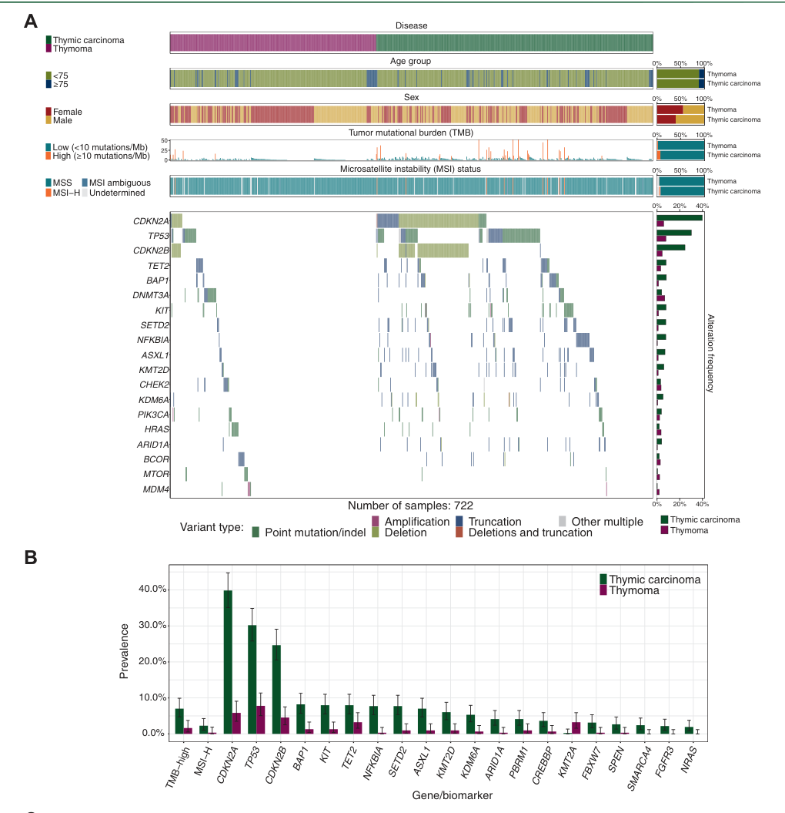

1. Disease Information
1.1 What is the disease?
Thymic carcinoma is a malignant epithelial tumor arising in the thymus/anterior mediastinum and is recognized as a distinct entity from thymoma in WHO tumor classifications. (gerber2024epidemiologyofthymomas pages 1-2, kuhn2023thymicepithelialtumors pages 1-2) Its biological behavior differs from thymoma; thymic carcinoma shows “clear malignant potential with often locally advanced or metastatic disease at the time of diagnosis” in contemporary epidemiology-focused reviews. (gerber2024epidemiologyofthymomas pages 1-2)
1.2 Key identifiers (available from retrieved evidence)
Table (click to expand)
| Item type (Ontology/classification) | Identifier/code | Label | Notes (e.g., scope) |
|---|---|---|---|
| Disease classification | — | Thymic carcinoma | Rare malignant epithelial tumor of the thymus; recognized as distinct from thymoma and typically shows more aggressive behavior and malignant potential at diagnosis (gerber2024epidemiologyofthymomas pages 1-2, kuhn2023thymicepithelialtumors pages 1-2) |
| WHO classification | WHO thymic epithelial tumor category | Thymic carcinoma | WHO classifies thymic epithelial tumors into type A, AB, B1-B3 thymomas and thymic carcinomas; thymic carcinoma is the most aggressive major subtype within TETs (kuhn2023thymicepithelialtumors pages 1-2) |
| Histologic subtype note | — | Squamous cell carcinoma (common histology) | Thymic carcinomas are pathologically similar to extrathymic carcinomas and commonly show squamous differentiation; squamous histology accounts for ~70-80% in reviews (gerber2024epidemiologyofthymomas pages 1-2, barachini2023molecularandfunctional pages 2-4) |
| ICD-10 | C37 | Malignant neoplasm of thymus | Broad site-based code covering malignant thymic neoplasms; useful for registry/claims coding but not specific to histologic subtype (supported indirectly by use in thymic malignancy coding and current evidence request) (gerber2024epidemiologyofthymomas pages 1-2) |
| ICD-O-3 topography | C370 | Thymus | Topography code used in Gerber et al. to retrieve anterior mediastinal/thymic tumor registry data (gerber2024epidemiologyofthymomas pages 1-2) |
| ICD-O-3 topography | C379 | Thymus, NOS / unspecified thymic site | Included in registry case retrieval for thymic tumors in epidemiologic analysis (gerber2024epidemiologyofthymomas pages 1-2) |
| ICD-O-3 topography | C381 | Anterior mediastinum | Included in registry retrieval because thymic epithelial tumors arise in the anterior mediastinum (gerber2024epidemiologyofthymomas pages 1-2) |
| Synonym / alternate label | — | Thymic cancer | Common umbrella/clinical term used in epidemiology and review literature; may be less specific than “thymic carcinoma” and can sometimes be used loosely in clinical discourse (gerber2024epidemiologyofthymomas pages 1-2, perrino2023thymicepithelialtumor pages 1-2) |
| Synonym / broader group | — | Thymic epithelial tumor (TET) | Broader category that includes thymomas and thymic carcinomas; thymic carcinoma should not be conflated with thymoma (gerber2024epidemiologyofthymomas pages 1-2, kuhn2023thymicepithelialtumors pages 1-2) |
| Differential classification note | — | Distinct from thymoma | Reviews emphasize that thymic carcinoma differs from thymoma in pathology, prognosis, autoimmune association, and molecular profile (e.g., frequent CDKN2A/TP53 alterations rather than classic thymoma-associated GTF2I pattern) (barachini2023molecularandfunctional pages 1-2, kuhn2023thymicepithelialtumors pages 1-2) |
| MONDO | not retrieved in current evidence | — | No MONDO identifier was retrieved in the available evidence/context set (kuhn2023thymicepithelialtumors pages 1-2, gerber2024epidemiologyofthymomas pages 1-2) |
| Orphanet | not retrieved in current evidence | — | No Orphanet identifier was retrieved in the available evidence/context set (kuhn2023thymicepithelialtumors pages 1-2, gerber2024epidemiologyofthymomas pages 1-2) |
| MeSH | not retrieved in current evidence | — | No MeSH identifier was retrieved in the available evidence/context set (kuhn2023thymicepithelialtumors pages 1-2, gerber2024epidemiologyofthymomas pages 1-2) |
Table: This table summarizes key identifier, synonym, and classification fields for thymic carcinoma using the retrieved evidence. It is useful for normalizing disease labels in a knowledge base while distinguishing thymic carcinoma from broader thymic epithelial tumor categories and from thymoma.
Notes on missing identifiers: MONDO, Orphanet, and MeSH identifiers were not retrievable from the current evidence set and are explicitly flagged as such in the table. (gerber2024epidemiologyofthymomas pages 1-2, kuhn2023thymicepithelialtumors pages 1-2)
1.3 Synonyms / alternative names
Common synonyms include “thymic cancer” and “thymic epithelial tumor (TET)” (the latter as a broader group that includes thymoma and thymic carcinoma). (gerber2024epidemiologyofthymomas pages 1-2, perrino2023thymicepithelialtumor pages 1-2)
1.4 Evidence source type
Key information in this report is derived from: (i) population registries (SEER; German registries), (ii) multicenter/real-world genomics datasets, (iii) single-arm phase II trials and retrospective clinical series, and (iv) society guideline documents (China Anti-Cancer Association). (gerber2024epidemiologyofthymomas pages 1-2, kurokawa2023genomiccharacterizationof pages 1-2, tateishi2024keytherapeuticagents pages 1-2, fang2024chinaanticancerassociation pages 1-2)
2. Etiology
2.1 Disease causal factors
No single specific causal gene or environmental exposure is established as a primary cause for thymic carcinoma; contemporary disease reviews emphasize that thymic carcinomas “do not have a single specific cause” and instead show recurrent somatic alterations and pathway dysregulation typical of carcinogenesis. (barachini2023molecularandfunctional pages 1-2)
2.2 Risk factors
Age/sex (epidemiologic correlates): In a US/Germany registry comparison (1999–2019), mean age at diagnosis for anterior mediastinal tumors including TETs was ~59–61 years, and sex ratios were near‑balanced. (gerber2024epidemiologyofthymomas pages 1-2) SEER-based analysis of thymic carcinoma (2000–2018) reported mean age at thymic carcinoma diagnosis 59.57 ± 13.72 years (median 61). (qiu2024incidenceofsecond pages 1-2)
Autoimmune syndromes: The CACA guideline emphasizes that paraneoplastic syndromes (including myasthenia gravis) are very rare in thymic carcinoma and that if myasthenia gravis is established, the diagnosis should be re-evaluated because the patient may actually have thymoma. (fang2024chinaanticancerassociation pages 2-4)
2.3 Protective factors
No specific protective genetic or environmental factors were identified in the retrieved evidence.
2.4 Gene–environment interactions
No gene–environment interaction evidence specific to thymic carcinoma was identified in the retrieved evidence.
3. Phenotypes
3.1 Common phenotypes and clinical presentation
Thymic carcinoma typically presents as an anterior mediastinal mass with invasive growth; compared with thymoma it more often has locally advanced or metastatic disease at diagnosis. (gerber2024epidemiologyofthymomas pages 1-2, barachini2023molecularandfunctional pages 1-2)
Metastatic pattern (real-world cohort): In a Japanese real-world metastatic thymic carcinoma cohort (n=178), liver metastases were present in 21.9%. (tateishi2024keytherapeuticagents pages 1-2)
3.2 Phenotype characteristics (age of onset, severity, progression, frequency)
- Onset: adult-onset predominance with typical diagnosis around the sixth decade in registry and SEER analyses. (gerber2024epidemiologyofthymomas pages 1-2, qiu2024incidenceofsecond pages 1-2)
- Severity/progression: aggressive course relative to thymoma; CACA guideline describes thymic carcinomas as “rare, aggressive, with worse prognosis than thymomas.” (fang2024chinaanticancerassociation pages 1-2)
3.3 Quality-of-life impact
Direct QoL instrumented measures (EQ‑5D/SF‑36/PROMIS) specific to thymic carcinoma were not identified in the retrieved evidence. Clinically meaningful QoL impact is implied by advanced/metastatic presentations and toxicity risks of systemic therapy. (tateishi2024keytherapeuticagents pages 1-2, thomas2015sunitinibinpatients pages 1-2)
3.4 Suggested HPO terms (non-exhaustive)
- Anterior mediastinal mass (HP:0006714)
- Chest pain (HP:0100749)
- Dyspnea (HP:0002094)
- Cough (HP:0012735)
- Weight loss (HP:0001824)
- Pleural effusion (HP:0002202)
- Lymphadenopathy (HP:0002716)
- Liver metastasis (HP:0031011)
- Bone metastasis (HP:0002667)
(These are ontology term suggestions; frequencies depend on cohort/stage.)
4. Genetic/Molecular Information
4.1 Causal genes
Thymic carcinoma is generally driven by somatic alterations rather than a single causal germline gene in current clinical practice; no established germline causal gene was identified in the retrieved evidence. (barachini2023molecularandfunctional pages 1-2, kurokawa2023genomiccharacterizationof pages 1-2)
4.2 Pathogenic/driver alterations (somatic) and frequencies
Large real-world genomic profiling (2023): In a 794-sample real-world dataset, thymic carcinoma most frequently harbored CDKN2A (39.9%), TP53 (30.2%), and CDKN2B (24.6%) alterations in the US cohort, with similar frequencies in Japan (CDKN2A 38.5%, TP53 36.5%, CDKN2B 30.8%). (kurokawa2023genomiccharacterizationof pages 1-2)
Immuno-oncology genomic biomarkers: TMB‑high (≥10 mutations/Mb) occurred in 7.0% and MSI in 2.3% of thymic carcinomas. (kurokawa2023genomiccharacterizationof pages 1-2) Figure-based visualization of these comparative frequencies versus thymoma is provided in Kurokawa et al. (2023). (kurokawa2023genomiccharacterizationof media 3c301c4f)
Actionable oncogene subset: KIT mutations are described as the most common actionable oncogene but still “only ~10%” in thymic carcinomas in a 2023/2024 review synthesis. (barachini2023molecularandfunctional pages 1-2)
Histotype-associated fusions: Reviews summarize rare subtype-defining fusions including NUT‑BRD4 (NUT carcinoma) and EWSR1‑ATF1 and CRTC1‑MAML2 in selected carcinoma subtypes. (barachini2023molecularandfunctional pages 2-4)
4.3 Modifier genes
No validated modifier genes for thymic carcinoma severity were identified in the retrieved evidence.
4.4 Epigenetic information
Advanced thymic carcinoma may acquire mutations in chromatin/epigenetic regulators per recent reviews, but specific methylation markers were not quantified in retrieved primary datasets. (barachini2023molecularandfunctional pages 1-2)
4.5 Chromosomal abnormalities
Thymic carcinoma shows high molecular complexity among TETs; review-level summaries note genomic complexity and recurrent pathway disruptions but do not provide a single diagnostic chromosomal rearrangement for typical TC. (kuhn2023thymicepithelialtumors pages 1-2)
5. Environmental Information
No specific environmental toxin, occupational exposure, lifestyle factor, or infectious agent was identified as a consistent trigger for thymic carcinoma in the retrieved evidence.
6. Mechanism / Pathophysiology
6.1 Mechanistic overview (causal chain)
A synthesis of contemporary real-world genomics and molecular reviews supports the following chain: 1) Initiating somatic alterations in tumor suppressor/cell-cycle control (notably CDKN2A/CDKN2B loss and TP53 alteration) are common in thymic carcinoma. (kurokawa2023genomiccharacterizationof pages 1-2) 2) These alterations promote cell-cycle dysregulation and genomic instability, consistent with higher relative TMB in thymic carcinoma compared with thymoma and with a subset meeting TMB-high criteria. (kurokawa2023genomiccharacterizationof pages 1-2) 3) Downstream, tumors display invasive growth and metastasis (e.g., liver metastases in ~22% of a metastatic real-world cohort). (tateishi2024keytherapeuticagents pages 1-2) 4) Clinically, this manifests as an aggressive mediastinal malignancy often requiring multimodal therapy and systemic treatment for advanced disease. (gerber2024epidemiologyofthymomas pages 1-2, tateishi2024keytherapeuticagents pages 1-2)
6.2 Key pathways/processes implicated
From metastatic TET sequencing, enriched pathway-level alterations include TP53/CDK, EGFR/RAS, and PI3K/mTOR pathways. (kurokawa2023genomiccharacterizationof pages 1-2)
6.3 Immune system involvement
Thymus biology and immune tolerance raise concerns for immune-related adverse events with immune checkpoint inhibitors (ICIs) in TETs; however, thymic carcinoma appears to have lower severe irAE rates than thymoma in pembrolizumab trials (e.g., grade ≥3 irAEs 15.4% in TC subset in an open-label phase II study). (perrino2023thymicepithelialtumor pages 1-2, silva2025currentclinicalparadigm pages 11-13)
6.4 Suggested ontology terms
GO biological processes (examples): - Cell cycle regulation (GO:0051726) - DNA damage response (GO:0006974) - Angiogenesis (GO:0001525) - Immune evasion / regulation of immune response (e.g., GO:0050776)
Cell Ontology (examples): - Thymic epithelial cell (CL:0002370) - Endothelial cell (CL:0000115) (angiogenesis-targeted therapy context) - T cell (CL:0000084) (tumor immune microenvironment context)
7. Anatomical Structures Affected
7.1 Primary and secondary organs
- Primary site: thymus/anterior mediastinum. (gerber2024epidemiologyofthymomas pages 1-2)
- Common metastatic/secondary sites in advanced disease: pleura/lymph nodes/lung/liver are frequently involved in advanced TET cohorts, and liver metastases are a clinically important subgroup in thymic carcinoma. (cho2019pembrolizumabforpatients pages 2-3, tateishi2024keytherapeuticagents pages 1-2)
7.2 Tissue/cell level
Epithelial malignancy arising from thymic epithelial cells; squamous differentiation is common. (gerber2024epidemiologyofthymomas pages 1-2)
7.3 Suggested UBERON terms
- Thymus (UBERON:0002370)
- Anterior mediastinum (UBERON:0008816)
- Pleura (UBERON:0000977)
- Liver (UBERON:0002107)
- Lymph node (UBERON:0000029)
8. Temporal Development
8.1 Onset
Adult onset predominates; mean/median diagnosis ages are ~59–61 years in registry/SEER analyses. (gerber2024epidemiologyofthymomas pages 1-2, qiu2024incidenceofsecond pages 1-2)
8.2 Progression and staging
Staging is central to prognosis and management. The CACA guideline uses Masaoka–Koga staging in combination with TNM for clinical staging. (tateishi2024keytherapeuticagents pages 1-2)
9. Inheritance and Population
9.1 Epidemiology (recent statistics)
Table (click to expand)
| Domain | Measure | Value | Population/Context | Source (PMID/DOI) | Publication date | URL | Evidence type |
|---|---|---|---|---|---|---|---|
| Epidemiology | Annual incidence, thymic carcinoma | US: 0.48 per million; Germany: 0.42 per million | Population-based registry analysis, 1999-2019 | DOI: 10.3389/fonc.2023.1308989 | 2024-01-09 | https://doi.org/10.3389/fonc.2023.1308989 | Registry epidemiology (gerber2024epidemiologyofthymomas pages 1-2) |
| Epidemiology | Sex ratio and mean age | Male:female ratio 1:1.09/1.03 (US/GER); mean age 59.48 ± 14.89 / 61.33 ± 13.94 years | Adults with thymic carcinoma/thymoma in US and Germany registries | DOI: 10.3389/fonc.2023.1308989 | 2024-01-09 | https://doi.org/10.3389/fonc.2023.1308989 | Registry epidemiology (gerber2024epidemiologyofthymomas pages 1-2) |
| Second malignancy risk | Cohort size | 1,130 thymic carcinoma patients; 73 developed second malignancies | SEER 2000-2018 | DOI: 10.1007/s00432-023-05522-3 | 2024-01 | https://doi.org/10.1007/s00432-023-05522-3 | Registry retrospective (qiu2024incidenceofsecond pages 1-2) |
| Second malignancy risk | Standardized incidence ratio (SIR) | 1.36 (95% CI 1.08-1.69) | Thymic carcinoma patients vs general population | DOI: 10.1007/s00432-023-05522-3 | 2024-01 | https://doi.org/10.1007/s00432-023-05522-3 | Registry retrospective (qiu2024incidenceofsecond pages 1-2) |
| Second malignancy risk | Age-adjusted incidence of second malignancies | 3058.48 per 100,000 persons | Thymic carcinoma patients in SEER | DOI: 10.1007/s00432-023-05522-3 | 2024-01 | https://doi.org/10.1007/s00432-023-05522-3 | Registry retrospective (qiu2024incidenceofsecond pages 1-2) |
| Second malignancy risk | Age at thymic carcinoma diagnosis | Mean 59.57 ± 13.72 years; median 61 years | Thymic carcinoma patients in SEER | DOI: 10.1007/s00432-023-05522-3 | 2024-01 | https://doi.org/10.1007/s00432-023-05522-3 | Registry retrospective (qiu2024incidenceofsecond pages 1-2) |
| Real-world therapy | Carboplatin + paclitaxel (CP) use | Most frequent 1st-line regimen: 85.5% | 178 metastatic thymic carcinoma patients; National Cancer Center Hospital, 2006-2023 | DOI: 10.21873/anticanres.17376 | 2024-12 | https://doi.org/10.21873/anticanres.17376 | Real-world retrospective (tateishi2024keytherapeuticagents pages 1-2) |
| Real-world therapy | CP efficacy | Median PFS 6.8 months; ORR 41.6%; liver metastasis response rate 40.9% | Metastatic thymic carcinoma | DOI: 10.21873/anticanres.17376 | 2024-12 | https://doi.org/10.21873/anticanres.17376 | Real-world retrospective (tateishi2024keytherapeuticagents pages 1-2) |
| Real-world therapy | Lenvatinib efficacy | Median PFS 9.4 months | Metastatic thymic carcinoma | DOI: 10.21873/anticanres.17376 | 2024-12 | https://doi.org/10.21873/anticanres.17376 | Real-world retrospective (tateishi2024keytherapeuticagents pages 1-2) |
| Real-world therapy | Lenvatinib special pattern | Reverse response in liver metastases: 20% | Only liver metastasis increased despite shrinkage elsewhere | DOI: 10.21873/anticanres.17376 | 2024-12 | https://doi.org/10.21873/anticanres.17376 | Real-world retrospective (tateishi2024keytherapeuticagents pages 1-2) |
| Real-world therapy | S-1 use | Most frequent 2nd-line regimen: 58.3% | Metastatic thymic carcinoma | DOI: 10.21873/anticanres.17376 | 2024-12 | https://doi.org/10.21873/anticanres.17376 | Real-world retrospective (tateishi2024keytherapeuticagents pages 1-2) |
| Real-world therapy | S-1 efficacy | Median PFS 4.5 months | Metastatic thymic carcinoma | DOI: 10.21873/anticanres.17376 | 2024-12 | https://doi.org/10.21873/anticanres.17376 | Real-world retrospective (tateishi2024keytherapeuticagents pages 1-2) |
| Real-world therapy | S-1 special pattern | Reverse response in liver metastases: 3.4% | Only liver metastasis increased despite shrinkage elsewhere | DOI: 10.21873/anticanres.17376 | 2024-12 | https://doi.org/10.21873/anticanres.17376 | Real-world retrospective (tateishi2024keytherapeuticagents pages 1-2) |
| Real-world therapy | Sunitinib use | Most frequent 3rd-line regimen: 28.4% | Metastatic thymic carcinoma | DOI: 10.21873/anticanres.17376 | 2024-12 | https://doi.org/10.21873/anticanres.17376 | Real-world retrospective (tateishi2024keytherapeuticagents pages 1-2) |
| Real-world therapy | Sunitinib efficacy | Median PFS 3.4 months | Metastatic thymic carcinoma | DOI: 10.21873/anticanres.17376 | 2024-12 | https://doi.org/10.21873/anticanres.17376 | Real-world retrospective (tateishi2024keytherapeuticagents pages 1-2) |
| Real-world therapy | Sunitinib special pattern | Reverse response in liver metastases: 8.3% | Only liver metastasis increased despite shrinkage elsewhere | DOI: 10.21873/anticanres.17376 | 2024-12 | https://doi.org/10.21873/anticanres.17376 | Real-world retrospective (tateishi2024keytherapeuticagents pages 1-2) |
| Real-world therapy | Cohort characteristics | 78.1% stage IV; 85.4% squamous histology; 21.9% liver metastases | 178 metastatic thymic carcinoma patients | DOI: 10.21873/anticanres.17376 | 2024-12 | https://doi.org/10.21873/anticanres.17376 | Real-world retrospective (tateishi2024keytherapeuticagents pages 1-2) |
| Genomics | Common alterations in thymic carcinoma (FMI cohort) | CDKN2A 39.9%; TP53 30.2%; CDKN2B 24.6% | 794 TET samples overall; FMI real-world cohort | DOI: 10.1016/j.esmoop.2023.101627 | 2023-09-12 (online) | https://doi.org/10.1016/j.esmoop.2023.101627 | Real-world genomics (kurokawa2023genomiccharacterizationof pages 1-2) |
| Genomics | Common alterations in thymic carcinoma (C-CAT cohort) | CDKN2A 38.5%; TP53 36.5%; CDKN2B 30.8% | Japanese C-CAT cohort | DOI: 10.1016/j.esmoop.2023.101627 | 2023-09-12 (online) | https://doi.org/10.1016/j.esmoop.2023.101627 | Real-world genomics (kurokawa2023genomiccharacterizationof pages 1-2) |
| Genomics | TMB-high prevalence | 7.0% | Thymic carcinoma; threshold >=10 mutations/Mb | DOI: 10.1016/j.esmoop.2023.101627 | 2023-09-12 (online) | https://doi.org/10.1016/j.esmoop.2023.101627 | Real-world genomics (kurokawa2023genomiccharacterizationof pages 1-2) |
| Genomics | MSI prevalence | 2.3% | Thymic carcinoma | DOI: 10.1016/j.esmoop.2023.101627 | 2023-09-12 (online) | https://doi.org/10.1016/j.esmoop.2023.101627 | Real-world genomics (kurokawa2023genomiccharacterizationof pages 1-2) |
| Phase II therapy | Sunitinib ORR | 6/23 partial responses = 26% (90% CI 12.1-45.3; 95% CI 10.2-48.4) | Chemotherapy-refractory thymic carcinoma; assessable treated patients | DOI: 10.1016/S1470-2045(14)71181-7 | 2015-02 | https://doi.org/10.1016/S1470-2045(14)71181-7 | Phase II trial (thomas2015sunitinibinpatients pages 4-6, thomas2015sunitinibinpatients pages 1-2) |
| Phase II therapy | Sunitinib additional activity | 9/23 (39%) had tumor shrinkage of 10-30%; median time to response 5.6 months; median response duration 16.4 months | Chemotherapy-refractory thymic carcinoma | DOI: 10.1016/S1470-2045(14)71181-7 | 2015-02 | https://doi.org/10.1016/S1470-2045(14)71181-7 | Phase II trial (thomas2015sunitinibinpatients pages 4-6) |
| Phase II therapy | Sunitinib toxicity | Grade 3/4 lymphocytopenia 20%; fatigue 20%; oral mucositis 20%; LVEF decrease 13% overall, grade 3 in 8%; 1 possible treatment-related cardiac arrest death | 40 treated patients across thymoma + thymic carcinoma cohorts | DOI: 10.1016/S1470-2045(14)71181-7 | 2015-02 | https://doi.org/10.1016/S1470-2045(14)71181-7 | Phase II trial (thomas2015sunitinibinpatients pages 1-2) |
| Phase II / retrospective therapy | S-1 ORR | 42.9% partial response (95% CI 21.4-67.4); DCR 85.7% (60.0-96.0%) | 14 consecutive refractory thymic carcinoma patients | DOI: 10.1186/s12885-016-2159-7 | 2016-02 | https://doi.org/10.1186/s12885-016-2159-7 | Retrospective clinical study (okuma2016correlationbetweens1 pages 1-2) |
| Phase II / retrospective therapy | S-1 survival outcomes | Median PFS 8.1 months (range 2.6-12.2); median OS 30.0 months (range 6.2-41.9) | Refractory thymic carcinoma | DOI: 10.1186/s12885-016-2159-7 | 2016-02 | https://doi.org/10.1186/s12885-016-2159-7 | Retrospective clinical study (okuma2016correlationbetweens1 pages 1-2) |
Table: This table compiles recent high-value quantitative findings for thymic carcinoma across epidemiology, second malignancy risk, real-world treatment outcomes, genomics, and landmark therapeutic studies. It is designed as a compact evidence summary for rapid incorporation into a disease knowledge base.
Key quote (registry abstract): “The overall annual incidence of thymoma was 2.2/2.64 (US/GER) per million inhabitants and for thymic carcinomas 0.48/0.42.” (Gerber et al., published 09 Jan 2024; https://doi.org/10.3389/fonc.2023.1308989). (gerber2024epidemiologyofthymomas pages 1-2)
9.2 Inheritance
No Mendelian inheritance pattern is established for thymic carcinoma in the retrieved evidence; disease is largely sporadic with somatic alterations. (kurokawa2023genomiccharacterizationof pages 1-2, barachini2023molecularandfunctional pages 1-2)
9.3 Population demographics
Gerber et al. report male-to-female ratios close to parity and mean ages around 60 in the US and Germany datasets. (gerber2024epidemiologyofthymomas pages 1-2)
10. Diagnostics
10.1 Clinical tests and imaging
The CACA guideline provides a structured differential diagnostic workflow for anterior mediastinal lesions including enhanced chest CT, MRI, PET/CT, tumor markers (e.g., AFP/β‑HCG), and selected labs (e.g., LDH/CRP/ESR) to distinguish TETs from other mediastinal diseases. (fang2024chinaanticancerassociation pages 2-4)
Key quote (guideline): “PET/CT can be used to evaluate clinical staging of aggressive or locally advanced tumors.” (Fang et al., published Jun 2024; https://doi.org/10.21037/med-23-54). (fang2024chinaanticancerassociation pages 2-4)
10.2 Pathology and immunohistochemistry
- Reviews highlight CD5 and CD117 (KIT) immunohistochemistry as useful markers in thymic carcinoma diagnosis. (barachini2023molecularandfunctional pages 1-2)
- A refractory thymic carcinoma chemotherapy series explicitly notes confirming diagnosis with IHC using CD5 and/or c‑KIT (and TdT to distinguish from thymoma). (okuma2016correlationbetweens1 pages 1-2)
10.3 Molecular testing (omics)
Given frequent alterations in CDKN2A/TP53/CDKN2B and a TMB-high/MSI subset, comprehensive genomic profiling (including TMB/MSI where feasible) is supported for advanced disease to identify therapeutic opportunities. (kurokawa2023genomiccharacterizationof pages 1-2)
10.4 Screening
The CACA guideline states: “CT screening for TETs is not recommended at present” (Recommendation 1B) due to low incidence and lack of evidence of prognostic benefit, but targeted screening by chest CT may be appropriate in selected high-risk contexts (e.g., autoimmune disease such as myasthenia gravis, MEN1). (fang2024chinaanticancerassociation pages 2-4)
11. Outcome/Prognosis
11.1 Survival and mortality
- A thymus/immune-focused review summarizes that thymic carcinoma has worse long-term survival than thymoma and reports 10-year OS ~27% for thymic carcinoma. (perrino2023thymicepithelialtumor pages 1-2)
- The CACA guideline provides stage-stratified survival estimates for thymic carcinoma (stage I–II: 91%; stage III–IV: 31%). (fang2024chinaanticancerassociation pages 1-2)
11.2 Prognostic factors
Stage is consistently emphasized as a dominant prognostic factor. (fang2024chinaanticancerassociation pages 1-2)
11.3 Second malignancies
SEER-based analysis shows elevated risk of second cancers after thymic carcinoma (SIR 1.36) and an age-adjusted second malignancy incidence of 3058.48 per 100,000 persons, supporting survivorship surveillance considerations. (qiu2024incidenceofsecond pages 1-2)
12. Treatment
12.1 Surgery and radiotherapy (real-world implementation)
Resection is standard for resectable disease, with multimodal strategies and adjuvant approaches determined by stage/resection status in guideline frameworks. (tateishi2024keytherapeuticagents pages 1-2, fang2024chinaanticancerassociation pages 1-2)
12.2 Systemic therapy — real-world outcomes (2024)
A large single-center real-world analysis (Japan; metastatic thymic carcinoma; n=178; published Dec 2024) provides practice-facing outcomes: - Carboplatin + paclitaxel (CP): median PFS 6.8 months; ORR 41.6%; liver metastasis response rate 40.9%. (tateishi2024keytherapeuticagents pages 1-2) - Lenvatinib: median PFS 9.4 months; “reverse response” (isolated growth of liver metastases) in 20%. (tateishi2024keytherapeuticagents pages 1-2) - S‑1: median PFS 4.5 months; reverse response 3.4%. (tateishi2024keytherapeuticagents pages 1-2) - Sunitinib: median PFS 3.4 months; reverse response 8.3%. (tateishi2024keytherapeuticagents pages 1-2)
Key quote (abstract): “The median PFS was 6.8, 9.4, 4.5, and 3.4 months in CP, lenvatinib, S‑1, and sunitinib. CP showed an ORR of 41.6%…” (Tateishi et al., 2024; https://doi.org/10.21873/anticanres.17376). (tateishi2024keytherapeuticagents pages 1-2)
12.3 Targeted therapy — authoritative trial evidence
Sunitinib (phase II; Lancet Oncology 2015): In chemotherapy-refractory thymic carcinoma, 6/23 assessable patients achieved partial responses (26%). (thomas2015sunitinibinpatients pages 4-6, thomas2015sunitinibinpatients pages 1-2) The abstract states: “The most common grade 3 and 4 treatment-related adverse events were lymphocytopenia (eight [20%] of 40 patients), fatigue (eight [20%]), and oral mucositis (eight [20%]).” (Thomas et al., 2015; https://doi.org/10.1016/S1470-2045(14)71181-7). (thomas2015sunitinibinpatients pages 1-2)
S‑1 (retrospective series; BMC Cancer 2016): Abstract-reported outcomes include ORR 42.9%, DCR 85.7%, median PFS 8.1 months, and median OS 30.0 months in refractory thymic carcinoma. (Okuma et al., 2016; https://doi.org/10.1186/s12885-016-2159-7). (okuma2016correlationbetweens1 pages 1-2)
12.4 Immunotherapy (ICIs)
While this report prioritized 2023–2024 sources, ICI efficacy/toxicity benchmarks come from phase II studies and are summarized in recent reviews: - Pembrolizumab has reported ORR ~19–23% in previously treated thymic carcinoma cohorts, with lower—but clinically meaningful—grade ≥3 immune-related adverse event rates in thymic carcinoma vs thymoma in a mixed TET phase II trial (15.4% for TC subset). (silva2025currentclinicalparadigm pages 11-13, perrino2023thymicepithelialtumor pages 1-2)
12.5 Current clinical trials (examples; real-world implementation of latest research)
- NCT05832827 (Artemis; first-line): carboplatin/paclitaxel/lenvatinib/pembrolizumab in “previously untreated advanced or recurrent thymic carcinomas” (National Cancer Center, Japan; recruiting). (NCT05832827 chunk 2)
- URL: https://clinicaltrials.gov/study/NCT05832827 (trial registry; 2023). (NCT05832827 chunk 2)
- NCT04710628 (PECATI; pretreated): pembrolizumab + lenvatinib in pre-treated thymic carcinoma patients (MedSIR; phase II record; completed). (NCT04710628 chunk 2)
- URL: https://clinicaltrials.gov/study/NCT04710628 (trial registry; 2021). (NCT04710628 chunk 2)
12.6 Suggested MAXO terms (examples)
- Surgical excision / thymectomy (MAXO:0001174)
- Radiotherapy (MAXO:0000014)
- Platinum-based chemotherapy (MAXO:0000085)
- Tyrosine kinase inhibitor therapy (MAXO:0000757)
- Immune checkpoint inhibitor therapy (MAXO:0000915)
13. Prevention
The CACA guideline states there are no established preventive strategies for mediastinal lesions/TETs and recommends against low-dose CT screening for TETs due to low incidence and lack of evidence of improved prognosis. (fang2024chinaanticancerassociation pages 2-4)
14. Other Species / Natural Disease
No naturally occurring thymic carcinoma evidence in other species, zoonotic considerations, or comparative pathology resources were identified in the retrieved evidence set.
15. Model Organisms
No thymic carcinoma-specific model organism systems (e.g., genetically engineered mouse models, organoids, or canonical cell lines) were identified in the retrieved evidence set.
Visual evidence (genomic landscape)
Kurokawa et al. (ESMO Open, online 12 Sep 2023) provide a figure comparing alteration prevalence and immune-genomic biomarkers between thymic carcinoma and thymoma, supporting the high prevalence of CDKN2A/TP53/CDKN2B alterations and higher TMB-high/MSI frequencies in thymic carcinoma. (kurokawa2023genomiccharacterizationof media 3c301c4f)
Expert opinion and analysis (authoritative sources; integration)
1) Guideline-driven practice is shaped by rarity and differential diagnosis needs: The CACA guideline emphasizes a structured differential diagnostic pathway and cautions against unnecessary surgery for benign incidental lesions, while recommending upfront surgery when high-grade TET (including TC) is suspected. (fang2024chinaanticancerassociation pages 2-4) 2) Precision oncology is increasingly practical: Real-world comprehensive genomic profiling shows reproducible high-frequency alterations (CDKN2A/TP53/CDKN2B) across continents and identifies a non-trivial TMB-high/MSI subset, supporting routine testing when systemic therapy is planned. (kurokawa2023genomiccharacterizationof pages 1-2, kurokawa2023genomiccharacterizationof media 3c301c4f) 3) Real-world outcomes are now quantifiable: Large institutional series (2024) provide regimen-level PFS/ORR benchmarks that complement small single-arm trials and can inform real-world decision-making and trial design. (tateishi2024keytherapeuticagents pages 1-2)
Key data sources (URLs; publication dates)
- Gerber et al. Frontiers in Oncology (Published 09 Jan 2024). https://doi.org/10.3389/fonc.2023.1308989 (gerber2024epidemiologyofthymomas pages 1-2)
- Qiu et al. J Cancer Res Clin Oncol (Jan 2024). https://doi.org/10.1007/s00432-023-05522-3 (qiu2024incidenceofsecond pages 1-2)
- Tateishi et al. Anticancer Research (Dec 2024). https://doi.org/10.21873/anticanres.17376 (tateishi2024keytherapeuticagents pages 1-2)
- Kurokawa et al. ESMO Open (Available online 12 Sep 2023). https://doi.org/10.1016/j.esmoop.2023.101627 (kurokawa2023genomiccharacterizationof pages 1-2)
- Fang et al. Mediastinum (Jun 2024). https://doi.org/10.21037/med-23-54 (fang2024chinaanticancerassociation pages 1-2)
- Thomas et al. Lancet Oncology (Feb 2015). https://doi.org/10.1016/S1470-2045(14)71181-7 (thomas2015sunitinibinpatients pages 1-2)
- Okuma et al. BMC Cancer (2016). https://doi.org/10.1186/s12885-016-2159-7 (okuma2016correlationbetweens1 pages 1-2)
References
-
(gerber2024epidemiologyofthymomas pages 1-2): Tiemo Sven Gerber, Stephanie Strobl, Alexander Marx, Wilfried Roth, and Stefan Porubsky. Epidemiology of thymomas and thymic carcinomas in the united states and germany, 1999-2019. Frontiers in Oncology, Jan 2024. URL: https://doi.org/10.3389/fonc.2023.1308989, doi:10.3389/fonc.2023.1308989. This article has 39 citations.
-
(kurokawa2023genomiccharacterizationof pages 1-2): K. Kurokawa, T. Shukuya, R. Greenstein, B. Kaplan, H. Wakelee, Jonathan J Ross, K. Miura, K. Furuta, S. Kato, J. Suh, S. Sivakumar, E. Sokol, D. P. Carbone, and K. Takahashi. Genomic characterization of thymic epithelial tumors in a real-world dataset. ESMO Open, 8:101627, Oct 2023. URL: https://doi.org/10.1016/j.esmoop.2023.101627, doi:10.1016/j.esmoop.2023.101627. This article has 36 citations and is from a domain leading peer-reviewed journal.
-
(kurokawa2023genomiccharacterizationof media 3c301c4f): K. Kurokawa, T. Shukuya, R. Greenstein, B. Kaplan, H. Wakelee, Jonathan J Ross, K. Miura, K. Furuta, S. Kato, J. Suh, S. Sivakumar, E. Sokol, D. P. Carbone, and K. Takahashi. Genomic characterization of thymic epithelial tumors in a real-world dataset. ESMO Open, 8:101627, Oct 2023. URL: https://doi.org/10.1016/j.esmoop.2023.101627, doi:10.1016/j.esmoop.2023.101627. This article has 36 citations and is from a domain leading peer-reviewed journal.
-
(tateishi2024keytherapeuticagents pages 1-2): AKIKO TATEISHI, YUSUKE OKUMA, YASUSHI GOTO, MOTOKO ARAKAKI, YUKIKO SHIMODA IGAWA, MASAHIRO TORASAWA, YUKI SHINNO, TATSUYA YOSHIDA, HIDEHITO HORINOUCHI, NOBORU YAMAMOTO, and YUICHIRO OHE. Key therapeutic agents for thymic carcinoma in real-world clinical practice. AntiCancer Research, 44:5501-5513, Dec 2024. URL: https://doi.org/10.21873/anticanres.17376, doi:10.21873/anticanres.17376. This article has 2 citations and is from a peer-reviewed journal.
-
(kuhn2023thymicepithelialtumors pages 1-2): Elisabetta Kuhn, Carlo Pescia, Paolo Mendogni, Mario Nosotti, and Stefano Ferrero. Thymic epithelial tumors: an evolving field. Life, 13:314, Jan 2023. URL: https://doi.org/10.3390/life13020314, doi:10.3390/life13020314. This article has 17 citations.
-
(barachini2023molecularandfunctional pages 2-4): Serena Barachini, Eleonora Pardini, Irene Sofia Burzi, Gisella Sardo Infirri, Marina Montali, and Iacopo Petrini. Molecular and functional key features and oncogenic drivers in thymic carcinomas. Cancers, 16:166, Dec 2023. URL: https://doi.org/10.3390/cancers16010166, doi:10.3390/cancers16010166. This article has 7 citations.
-
(perrino2023thymicepithelialtumor pages 1-2): Matteo Perrino, Nadia Cordua, Fabio De Vincenzo, Federica Borea, Marta Aliprandi, Luigi Giovanni Cecchi, Roberta Fazio, Marco Airoldi, Armando Santoro, and Paolo Andrea Zucali. Thymic epithelial tumor and immune system: the role of immunotherapy. Cancers, 15:5574, Nov 2023. URL: https://doi.org/10.3390/cancers15235574, doi:10.3390/cancers15235574. This article has 16 citations.
-
(barachini2023molecularandfunctional pages 1-2): Serena Barachini, Eleonora Pardini, Irene Sofia Burzi, Gisella Sardo Infirri, Marina Montali, and Iacopo Petrini. Molecular and functional key features and oncogenic drivers in thymic carcinomas. Cancers, 16:166, Dec 2023. URL: https://doi.org/10.3390/cancers16010166, doi:10.3390/cancers16010166. This article has 7 citations.
-
(fang2024chinaanticancerassociation pages 1-2): Wentao Fang, Zhentao Yu, Chun Chen, Gang Chen, Keneng Chen, Jianhua Fu, Yongtao Han, Xiaolong Fu, Jie Wang, Teng Mao, Zhitao Gu, and Ning Xu. China anti-cancer association guidelines for the diagnosis, treatment, and follow-up of thymic epithelial tumors (2023). Jun 2024. URL: https://doi.org/10.21037/med-23-54, doi:10.21037/med-23-54. This article has 6 citations.
-
(qiu2024incidenceofsecond pages 1-2): Guanghao Qiu, Fuqiang Wang, and Yun Wang. Incidence of second malignancies in patients with thymic carcinoma and thymic neuroendocrine tumor. Journal of Cancer Research and Clinical Oncology, Jan 2024. URL: https://doi.org/10.1007/s00432-023-05522-3, doi:10.1007/s00432-023-05522-3. This article has 6 citations and is from a peer-reviewed journal.
-
(fang2024chinaanticancerassociation pages 2-4): Wentao Fang, Zhentao Yu, Chun Chen, Gang Chen, Keneng Chen, Jianhua Fu, Yongtao Han, Xiaolong Fu, Jie Wang, Teng Mao, Zhitao Gu, and Ning Xu. China anti-cancer association guidelines for the diagnosis, treatment, and follow-up of thymic epithelial tumors (2023). Jun 2024. URL: https://doi.org/10.21037/med-23-54, doi:10.21037/med-23-54. This article has 6 citations.
-
(thomas2015sunitinibinpatients pages 1-2): Anish Thomas, Arun Rajan, Arlene Berman, Yusuke Tomita, Christina Brzezniak, Min-Jung Lee, Sunmin Lee, Alexander Ling, Aaron J Spittler, Corey A Carter, Udayan Guha, Yisong Wang, Eva Szabo, Paul Meltzer, Seth M Steinberg, Jane B Trepel, Patrick J Loehrer, and Giuseppe Giaccone. Sunitinib in patients with chemotherapy-refractory thymoma and thymic carcinoma: an open-label phase 2 trial. The Lancet. Oncology, 16 2:177-86, Feb 2015. URL: https://doi.org/10.1016/s1470-2045(14)71181-7, doi:10.1016/s1470-2045(14)71181-7. This article has 352 citations.
-
(silva2025currentclinicalparadigm pages 11-13): Douglas Dias e Silva, Beatriz Viesser Miyamura, Isa Mambetsariev, Jeremy Fricke, Javier Arias-Romero, Amit A. Kulkarni, Ajaz Khan, Debora S. Bruno, Jyoti Malhotra, Abigail Fong, Jae Kim, Colton Ladbury, Arya Amini, Gustavo Schvartsman, and Ravi Salgia. Current clinical paradigm and therapeutic advancements in thymic malignancies: a narrative review. Cancers, 17:3622, Nov 2025. URL: https://doi.org/10.3390/cancers17223622, doi:10.3390/cancers17223622. This article has 1 citations.
-
(cho2019pembrolizumabforpatients pages 2-3): Jinhyun Cho, Hae Su Kim, Bo Mi Ku, Yoon-La Choi, Razvan Cristescu, Joungho Han, Jong-Mu Sun, Se-Hoon Lee, Jin Seok Ahn, Keunchil Park, and Myung-Ju Ahn. Pembrolizumab for patients with refractory or relapsed thymic epithelial tumor: an open-label phase ii trial. Journal of clinical oncology : official journal of the American Society of Clinical Oncology, 37:JCO2017773184, Aug 2019. URL: https://doi.org/10.1200/jco.2017.77.3184, doi:10.1200/jco.2017.77.3184. This article has 374 citations.
-
(thomas2015sunitinibinpatients pages 4-6): Anish Thomas, Arun Rajan, Arlene Berman, Yusuke Tomita, Christina Brzezniak, Min-Jung Lee, Sunmin Lee, Alexander Ling, Aaron J Spittler, Corey A Carter, Udayan Guha, Yisong Wang, Eva Szabo, Paul Meltzer, Seth M Steinberg, Jane B Trepel, Patrick J Loehrer, and Giuseppe Giaccone. Sunitinib in patients with chemotherapy-refractory thymoma and thymic carcinoma: an open-label phase 2 trial. The Lancet. Oncology, 16 2:177-86, Feb 2015. URL: https://doi.org/10.1016/s1470-2045(14)71181-7, doi:10.1016/s1470-2045(14)71181-7. This article has 352 citations.
-
(okuma2016correlationbetweens1 pages 1-2): Yusuke Okuma, Yukio Hosomi, Shingo Miyamoto, Masahiko Shibuya, Tatsuru Okamura, and Tsunekazu Hishima. Correlation between s-1 treatment outcome and expression of biomarkers for refractory thymic carcinoma. BMC Cancer, Feb 2016. URL: https://doi.org/10.1186/s12885-016-2159-7, doi:10.1186/s12885-016-2159-7. This article has 15 citations and is from a peer-reviewed journal.
-
(NCT05832827 chunk 2): First-line CBDCA/PTX/LEN/Pembrolizumab Combination for Previously Untreated Advanced or Recurrent Thymic Carcinomas (Artemis). National Cancer Center, Japan. 2023. ClinicalTrials.gov Identifier: NCT05832827
-
(NCT04710628 chunk 2): Combination of Pembrolizumab and Lenvatinib, in Pre-treated Thymic CArcinoma paTIents. MedSIR. 2021. ClinicalTrials.gov Identifier: NCT04710628
Artifacts
- Edison artifact artifact-00
- Edison artifact artifact-01
